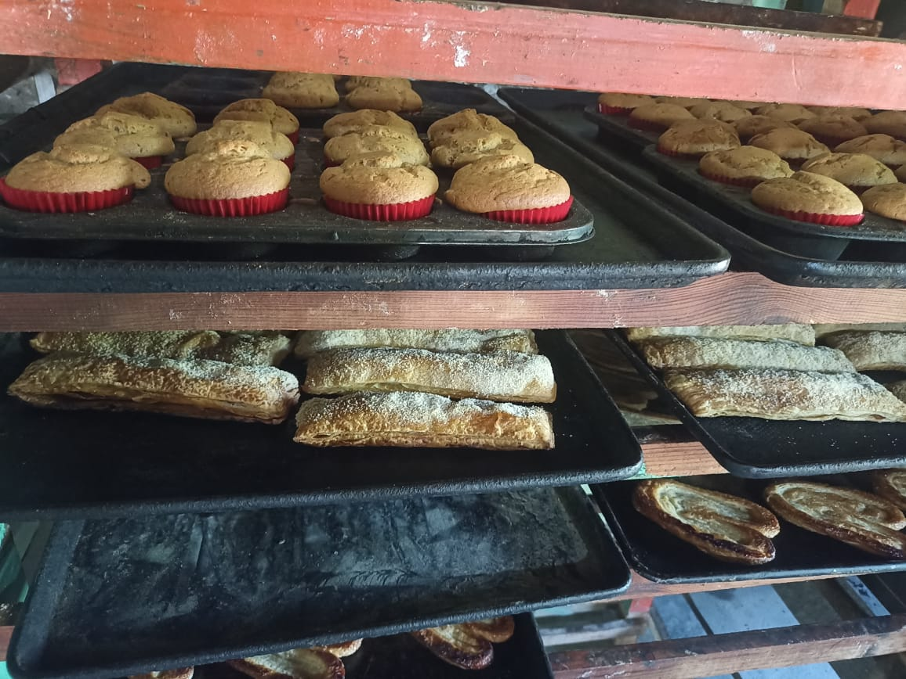

Panadería Los Trolles

La Panadería Los Trolles inicia desde un joven que inicio a trabajar en una panadería, en ese transcurso le fueron enseñando hasta que logró aprender e incluso a enseñar a otros compañeros. Inician su nogocio entre su papá y él. Desde ahi comienza un negocio familiar, La pandería Los Trolles.
Ubicación:Cd. Alemán,Ver.
Dirección: Col. Mario Santos Gómez. calle Ixcatlecos S/N.
Número: 52 288 132 6654.
No cuenta con redes sociales.

Se dedica a hacer y vender pan, ofreciendo, productos de panadería en el consumo diario de las familias. Unos de los productos que realiza:
Ofrece:
Ofrece pan de buena calidad a precios accesibles, siendo una opción económica, confiable y familiar para la comunidad.
Pan por mayoreo sale a $3.50 o $3 la pieza
Valores: Honestidad-Responsabilidad-Confianza.